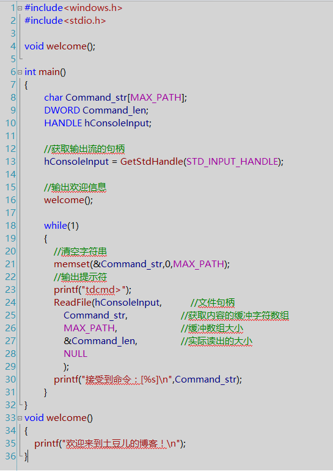
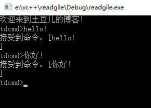
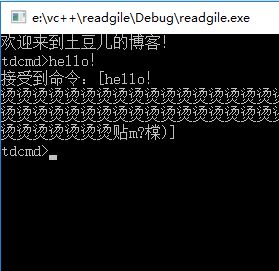

<!DOCTYPE html><html lang="null"><head><meta http-equiv="content-type" content="text/html; charset=utf-8"><meta content="width=device-width, initial-scale=1.0, maximum-scale=1.0, user-scalable=0" name="viewport"><meta content="yes" name="apple-mobile-web-app-capable"><meta content="black-translucent" name="apple-mobile-web-app-status-bar-style"><meta content="telephone=no" name="format-detection"><meta name="renderer" content="webkit"><title>进程的小例子 - 土豆儿的博客</title><meta name="description" content="进程是什么呢？可以简单理解为正在运行的程序。程序是静态的指令，进程是一个容器，包含了一系列运行在这个程序实例中的线程使用的资源。一个进程包含一个或多个线程，线程是进程中执行代码的独立实体。创建进程接下来，创建一个打开命令行的小程序，运行该程序，打开命令行再来一个小例子，还记得上一节中写的cmd创建文"><link type="text/css" rel="stylesheet" href="/css/basic.css?v=0.0.0"><link type="text/css" rel="stylesheet" href="/css/pure.css?v=0.0.0"><link type="text/css" rel="stylesheet" href="/css/style.css?v=0.0.0"><script type="text/javascript" src="//cdn.bootcss.com/jquery/1.11.0/jquery.min.js"></script></head></html><body><div class="body_container"><div id="header"><div class="site-name"><h1 class="hidden">进程的小例子</h1><a id="logo" href="/.">土豆儿的博客</a></div><div id="nav-menu"><div class="bitcron_nav"><div class="site_nav_wrap"><div class="site_nav"><span class="a_container"><a href="/." class="selected active current">首页</a></span><span class="a_container"><a href="/archives/">归档</a></span><span class="a_container"><a href="/about/">关于</a></span><span class="a_container"><a href="/atom.xml">订阅</a></span></div></div></div></div></div><div id="layout" class="pure-g"><div class="pure-u-1 pure-u-md-3-4"><div class="content_container"><div class="post"><h1 class="post-title">进程的小例子</h1><div class="post-meta">Jul 12, 2017<script src="https://dn-lbstatics.qbox.me/busuanzi/2.3/busuanzi.pure.mini.js" type="text/javascript"></script><span class="meta-space">  |  </span><span id="busuanzi_container_page_pv"><span id="busuanzi_value_page_pv"></span><span> 浏览</span></span></div><div class="post-content"><p>进程是什么呢？可以简单理解为正在运行的程序。程序是静态的指令，进程是一个容器，包含了一系列运行在这个程序实例中的线程使用的资源。<br>一个进程包含一个或多个线程，线程是进程中执行代码的独立实体。</p>
<hr>
<h2 id="创建进程"><a href="#创建进程" class="headerlink" title="创建进程"></a>创建进程</h2><p></p>
<p>接下来，创建一个打开命令行的小程序，运行该程序，打开命令行<br></p>
<hr>
<h2 id="再来一个小例子，还记得上一节中写的cmd创建文件的小工具吗？"><a href="#再来一个小例子，还记得上一节中写的cmd创建文件的小工具吗？" class="headerlink" title="再来一个小例子，还记得上一节中写的cmd创建文件的小工具吗？"></a>再来一个小例子，还记得上一节中写的cmd创建文件的小工具吗？</h2><p>我们将创建一个进程来来使用。<br>首先，我们从输入流读取用户的输入，用”ReadFile”就可以了。在VS2008下，可以通过F1查MSDN。<br></p>
<p><br>运行，得到：<br><br><br>注意，while循环中，有memset函数，如果我们将这行代码注释<br>//memset(&amp;Command_str,0,MAX_PATH);</p>
<p>再次运行，会出现：<br><br>这是问什么呢？memset函数是用来做内存初始化，因为在分配内存空间的时候，内存的默认值不为0，因此，如果不做初始化，就会出现一些野值。</p>
<hr>
<h2 id="接下来，我们调用之前写的命令"><a href="#接下来，我们调用之前写的命令" class="headerlink" title="接下来，我们调用之前写的命令"></a>接下来，我们调用之前写的命令</h2><p>#include <windows.h>;</windows.h></p>
<p>#include <stdio.h>;</stdio.h></p>
<p>#include <string.h>;  // for strcmp</string.h></p>
<p>#include <stdlib.h>;  // for exit</stdlib.h></p>
<p>void welcome();<br>void command_switch(char <em>cmd_str);<br>BOOL CreateChildProcess(char </em>cmd_str);</p>
<p>int main()<br>{<br>    char Command_str[MAX_PATH];<br>    DWORD Command_len;<br>    HANDLE hConsoleInput;  </p>
<pre><code>// 获取输出流的句柄
hConsoleInput = GetStdHandle(STD_INPUT_HANDLE);  

// 输出欢迎信息
welcome();

while(1)
{
    // 清空命令字符串
    ZeroMemory(&amp;Command_str, MAX_PATH);
    // 输出提示符
    printf(&quot;tdcmd&gt;;&quot;);
    // 读取输入流
    ReadFile(
        hConsoleInput,  // 文件句柄
        Command_str,    // 获取内容的缓冲字符数组
        MAX_PATH,       // 缓冲数组大小
        &amp;Command_len,   // 实际读出的大小
        NULL);

    command_switch(Command_str);
}
</code></pre><p>}</p>
<p>void command_switch(char <em>cmd_str)<br>{<br>    //char cmd_tmp[MAX_PATH]={0};<br>    char </em>pstr = cmd_str;</p>
<pre><code>// 遍历到换行之前
while(*pstr != &apos;\r&apos; &amp;&amp; *pstr != &apos;\n&apos;)
{
     *pstr++;
}
//覆盖换行
*pstr = &apos;\0&apos;;
// printf(&quot;收到命令：[%s]n&quot;, cmd_tmp);

// 判断命令
if( strcmp(cmd_str, &quot;hi&quot;) == 0 )
{
    printf(&quot;你好~欢迎使用土豆儿的cmd工具\n&quot;);
} else if ( strcmp( cmd_str, &quot;exit&quot; ) == 0 )
{
    exit(0);
}else
{
    //创建子进程
    CreateChildProcess(cmd_str);
}
</code></pre><p>}<br>BOOL CreateChildProcess(char *cmd_str)<br>{<br>    STARTUPINFO start_info = {sizeof(start_info)} ;<br>    PROCESS_INFORMATION process_info;<br>    BOOL flag;</p>
<pre><code> //将启动信息结构清零（相当于memset 0, 不过效率更高）
ZeroMemory(&amp;start_info, sizeof(start_info));
//将进程信息结构清零
ZeroMemory(&amp;process_info,sizeof(process_info));

flag = CreateProcess(
    NULL,                        //不传程序路径，使用命令行
    cmd_str,                    //命令行命令
    NULL,                        //不继承进程句柄（默认）
    NULL,                        //不继承线程句柄(默认)
    FALSE,                        //不继承句柄（默认）
    0,                                //没有创建标志（默认）
    NULL,                        //使用默认环境变量
    NULL,                        //使用父进程的目录
    &amp;start_info,                //STARTUPINFO结构
    &amp;process_info    );        //保存相关信息

if( !flag)
{
    //创建失败
    printf(&quot;Error:命令为找到（%d）\n&quot;,GetLastError());
    return 0;
}

//等待子进程结束
//使用到了通过PROCESS_INFORMATION结构体获取子进程的句柄hProcess
WaitForSingleObject(process_info.hProcess, INFINITE);
//关闭进程句柄和线程句柄
CloseHandle(process_info.hProcess);
CloseHandle(process_info.hThread);

return 1;
</code></pre><p>}</p>
<p>void welcome()<br>{<br>    printf(“欢迎来到土豆儿的博客！\n”);</p>
<p>}</p>
<p>运行，得到：<br></p>
</div><div class="tags"><a href="/tags/Windows编程/">Windows编程</a></div></div></div></div><div class="pure-u-1-4"><div id="sidebar"><div class="widget"><form action="//www.google.com/search" method="get" accept-charset="utf-8" id="search" target="_blank" class="search-form"><input type="text" name="q" maxlength="20" placeholder="Search"/><input type="hidden" name="sitesearch" value="https://CookieZH.github.io"/></form></div><div class="widget"><div class="widget-title"> 分类</div></div><div class="widget"><div class="widget-title"> 标签</div><div class="tagcloud"><a href="/tags/Windows编程/" style="font-size: 18px;">Windows编程</a> <a href="/tags/逆向/" style="font-size: 12px;">逆向</a></div></div><div class="widget"><div class="widget-title"> 最新文章</div><ul class="post-list"><li class="post-list-item"><a class="post-list-link" href="/2017/07/12/reverse-1/">破解小程序reverseTest.exe</a></li><li class="post-list-item"><a class="post-list-link" href="/2017/07/12/Windows-3/">进程的小例子</a></li><li class="post-list-item"><a class="post-list-link" href="/2017/07/12/windows-2/">文件系统的简单例子</a></li><li class="post-list-item"><a class="post-list-link" href="/2017/07/11/post-name/">走进Windows的API</a></li><li class="post-list-item"><a class="post-list-link" href="/2017/07/11/hello-world/">Hello</a></li></ul></div><div class="widget"><div class="widget-title"> 友情链接</div><ul class="links-list"><li class="links-list-item"><a href="http://www.guoyunzhe.com" title="小胖墩儿的博客" target="_blank">小胖墩儿的博客</a></li></ul></div></div></div></div><div id="footer">© <a href="/." rel="nofollow">土豆儿的博客.</a> Powered by<a rel="nofollow" target="_blank" href="https://hexo.io"> Hexo.</a> Theme<a target="_blank" href="https://github.com/7ye/maupassant-hexo"> Maupassant.</a></div><a id="back_to_top" href="javascript:void(0)" class="back_to_top"><span>△</span></a><script type="text/javascript" src="/js/totop.js?v=0.0.0"></script><link rel="stylesheet" href="/css/jquery.fancybox.css"><script type="text/javascript" src="//cdn.bootcss.com/fancybox/2.1.5/jquery.fancybox.pack.js"></script><script type="text/javascript" src="/js/fancybox.js?v=0.0.0"></script><script>function auto_code_fit(){
  if($(".highlight").length != 0){
    var pc_width = $(".post-content").width();
    $(".highlight .code").find("pre").width((pc_width-70)+"px");
  }
}
window.onresize = function(){
  auto_code_fit();
}
auto_code_fit();</script></div></body>